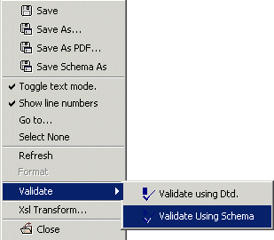

Validate an XML document using an XML Schema; check if the XML document conforms to a XML Schema with the Validate Schema menu item in the Validate sub-menu of the document pop-up menu.
|
 |
A window frame below the XML document displays the errors generated by validating the document using an XML Schema.